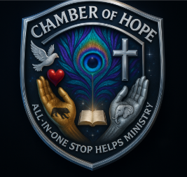

A new week can begin with renewed strength, clearer direction, and one hopeful next step.
Encouragement quote: “However long the night, the dawn will break.” African proverb
Scripture: “Fear thou not; for I am with thee: be not dismayed; for I am thy God.” Isaiah 41:10 (KJV)
Wisdom reflection: Hard seasons do not last forever. Even when the way forward feels uncertain, hope can return through steady faith, trustworthy information, and compassionate support. You are not required to solve everything at once.
Encouraging reminder: Pause, breathe, and begin again. The need in front of you may be important, but it does not define your whole story. Help may begin with one clear question and one reliable starting point.
Hold onto this: You are still worthy of care, dignity, and hope while you are searching for answers. A difficult chapter is not the end of the story.
Why it matters: People may arrive here carrying several needs at once—food, housing, healthcare, safety, benefits, records, or support for someone they love. A calm, trustworthy starting point can make the search feel less confusing.
This week's step: Name the one need that feels most urgent. Use the directory to locate the appropriate official resource, save the contact information, and note the next step the organization provides.
Come back next Monday: Return next Monday for a new message of hope, wisdom, encouragement, and practical direction.
Last updated: August 3, 2026
Chamber of Hope is a Worldwide HELPS Ministry Directory created to help people, families, caregivers, churches, organizations, and communities find clearer starting points for help. It is Christ-centered, service-focused, and welcoming to people from all backgrounds.
Important: Chamber of Hope shares resource pathways and official starting points. It does not provide emergency response, legal advice, medical advice, financial advice, insurance advice, tax advice, counseling, case management, professional approval, or guaranteed services. Contact the appropriate provider, agency, hotline, or emergency service directly when help is urgent.
Mission reminder: Find help. Share hope.
Verified help for digital safety, immigration, careers, consumer protection, pets, veterans, housing, disaster recovery, end-of-life planning, and life checklists.
Open the Life Resource CenterChoose the need that feels most urgent. Each button opens a clear directory pathway.
Immediate danger: contact the emergency service for your current location. For additional crisis and personal-safety guidance, open Emergency & Safety.
Choose the easiest way to begin. You only need one starting point.
If your city is not listed, begin with your state or country page. If a large page freezes inside Facebook or Instagram, open it in Safari or Chrome.
Use these only when they help with your next step.
Support Chamber of Hope
This directory is free to use. Donations help keep resources updated, improve categories, and expand practical help.
If possible, a gift of $5 or more is appreciated, but every visit, share, and gift helps this work continue.
About This Directory
The full directory contains more locations, categories, and clear starting points than can fit into a social-media post.
It is an informational guide and does not replace emergency services, medical care, legal advice, shelters, hotlines, or government agencies. Contact the appropriate provider directly when help is urgent.
Faith & Mission Foundation
Chamber of Hope is Christ-centered, shaped by African spiritual wisdom, and welcoming with interfaith respect. People from all backgrounds are welcome to use this directory and begin with one clear next step.
Directory Care
Use listings as starting points and confirm details with the provider, agency, hotline, or official website. Visitors may report broken links or outdated information for review.
Help Request Tools & Next-Step Checklists
Use simple checklists and scripts before calling, emailing, or visiting a resource. Includes what to gather, what to say, how to track next steps, what to ask after a denial or waitlist, caregiver notes, language/disability access reminders, and scam-safety tips.
Open Help Request ToolsAdvertise & Partner With Chamber of Hope
Large nonprofits, organizations, churches, community programs, family programs, small businesses, and practical local services may request clearly marked sponsored visibility or partnership consideration. Sponsored information stays separate from urgent/free help resources and does not mean endorsement, advice, or guaranteed services.
Partnership consideration means a request to connect, support, share resources, sponsor visibility, or discuss community collaboration. It is not automatic approval or a formal legal partnership.
Email: 8chamber8ofhope8@gmail.com
Advertising & Partnership InformationFind verified official starting points for housing, homeownership, retirement, Social Security, Medicare, Medicaid, long-term care, consumer rights, credit, debt collection, taxes, estate planning, veterans, education, career, travel, and worldwide life-stage help.